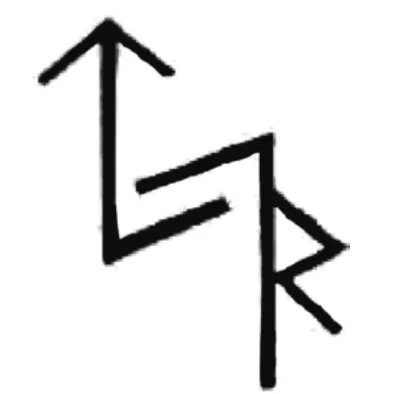

Rune Grimoire
Justice Bind Rune
Type
Correspondances1
A bind rune for obtaining justice, whether from a court of law or from the "court of life."

Numerical Analysis
The numerical analysis reveals a doubling of the force of the T-rune (Tiwaz), the rune of justice, law, and righteous order. This intensification channels the power of Tyr directly into the outcome of the working.
See Foundations & Ethics for deeper interpretation of numerical symbolism.
Usage
Suited for any situation requiring a just outcome, whether in legal proceedings, disputes, or broader life circumstances where fairness and right action must prevail.